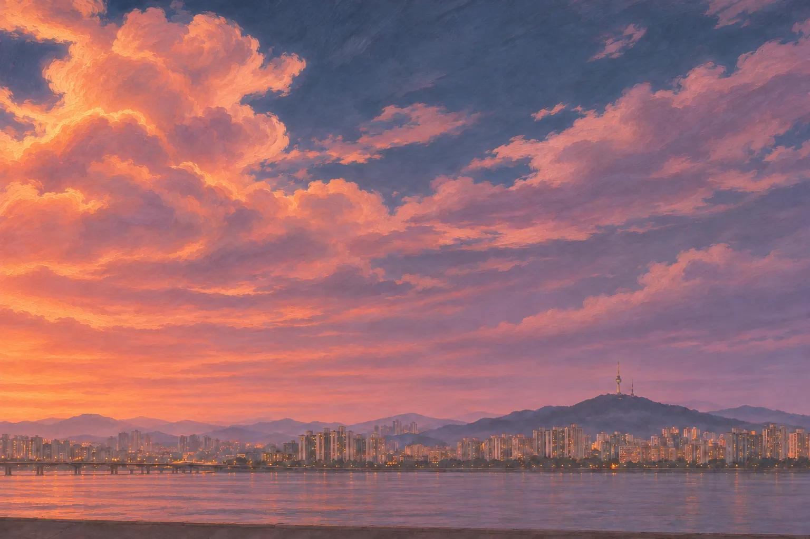

Tennisweet Tennis Club
해가 지면,코트에 불이 켜집니다.
One evening
두 시간,
네 번의 경기.
첫 경기
참석을 체크한 사람들로 대진을 짭니다. 코트 번호와 내 경기는 휴대폰에서 바로 확인합니다.
짝이 바뀝니다
한 경기는 30분. 시간이 끝나면 파트너도 상대도 새로 만납니다.
늦어도 괜찮습니다
중간에 도착해도 바로 코트로 들어갑니다. 막 온 사람을 벤치에 두지 않는 것이 규칙입니다.
마지막 경기
끝난 경기는 완료를 누르고, 원하면 점수도 남깁니다. 22시에 마칩니다.
Fair play
누구나 비슷하게,
충분히 칩니다.
경기 수는 고르게
한 사람이 몰아 치지 않도록 경기 수 차이를 한 경기 안으로 맞춥니다. 더 친다면 오래 머문 사람부터.
파트너는 다양하게
최근 모임 기록을 보고, 같은 짝과 같은 상대를 덜 만나도록 섞습니다.
경기 종류도 골고루
남복, 여복, 혼복이 한 사람에게 몰리지 않도록 나눕니다.
- 21
- 명의 회원
- 12
- 번의 정기 모임
- 118
- 경기 편성
- 36
- 번의 게스트 참석
2026년 9월 17일부터 10월 30일까지의 모임 기록 기준
The cup
분기마다 한 번은,
순위를 겁니다.
파트너를 바꿔 가며 치고 개인 순위를 매기는 클럽 대회입니다. 지난 대회는 경기 뒤 회식까지 함께했습니다.
Latest
2026년 3분기 테니스윗 대회
- 9.11금요일 저녁
- 14명 참가
- 15경기